✓
OFFICIALLY RECOGNIZED官方认证
青年菁英生涯发展协会
山西财经大学官方就业协会
- 01 / 组织属性
- 校级官方学生社团
- 02 / 主管单位
- 就业创业中心（创新创业学院）
山西财经大学 · 青年菁英
山西财经大学官方就业协会
山西财经大学2025年度优秀学生社团
不是贴在墙上的口号，而是这个组织真实运行的底层协议。
没有等级，每个人都站在彼此身边。
想来就全情投入，忙时就放心缺席。这里不点名，也不拿热爱做考勤。
全校可开证明最多的社团之一。综测、志愿时长、奖学金、评奖评优，每份认真都会被看见。
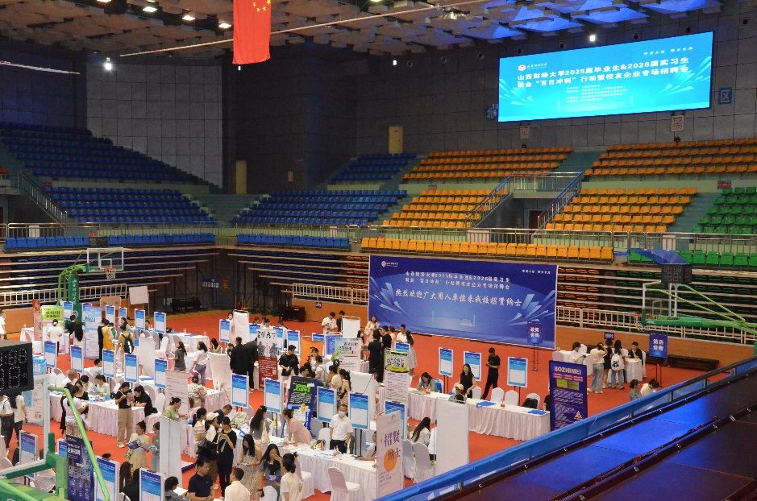
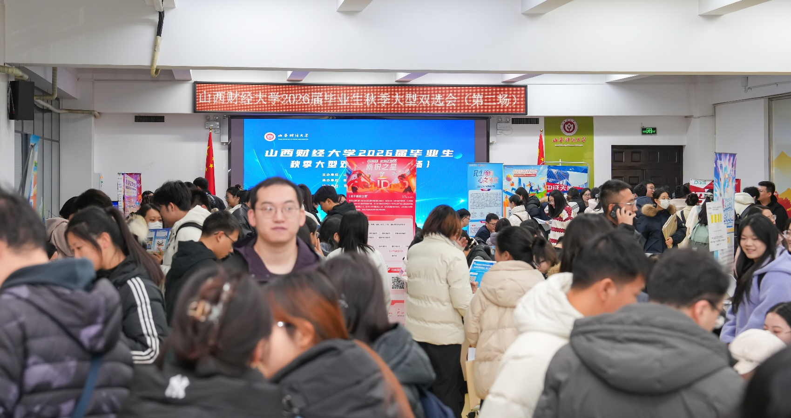
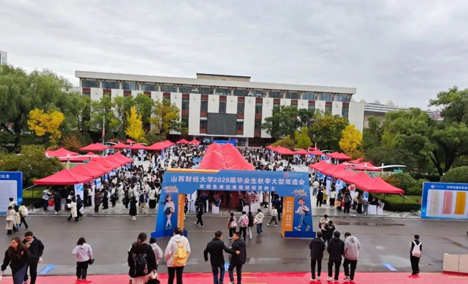
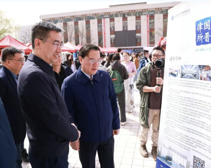
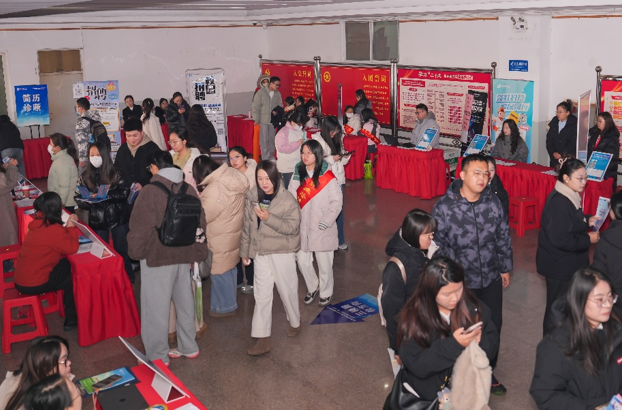
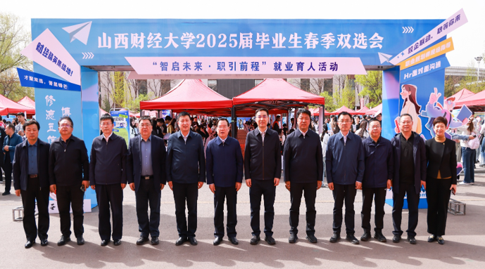
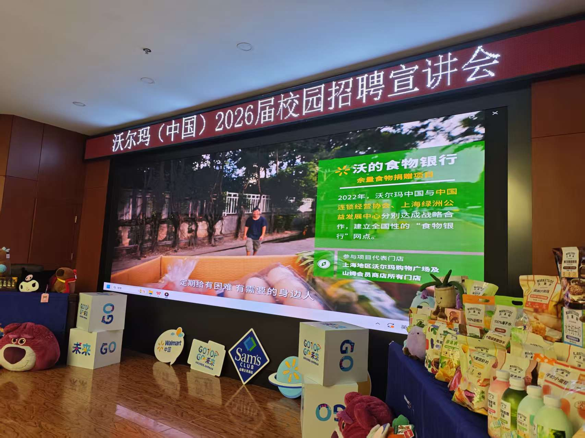
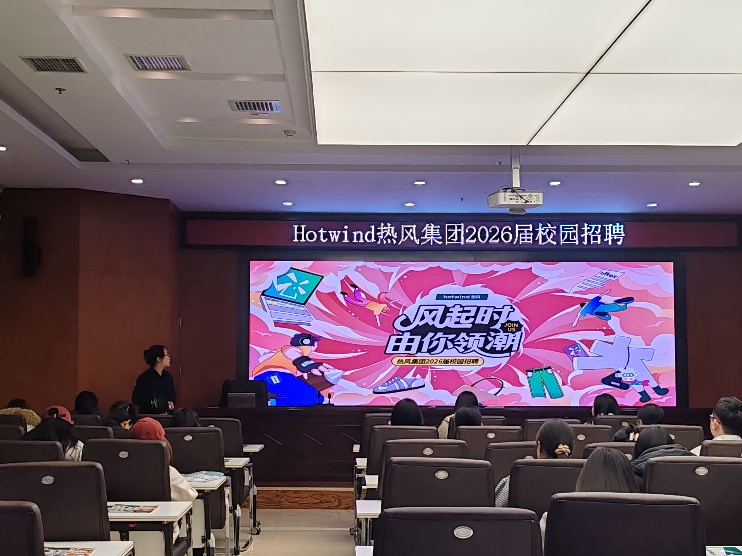
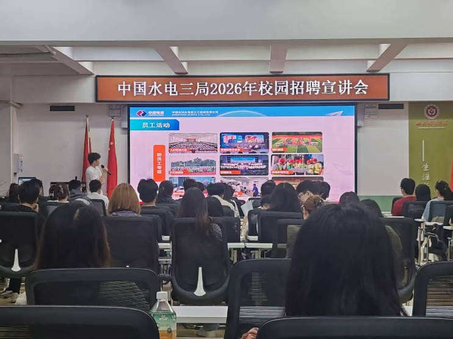
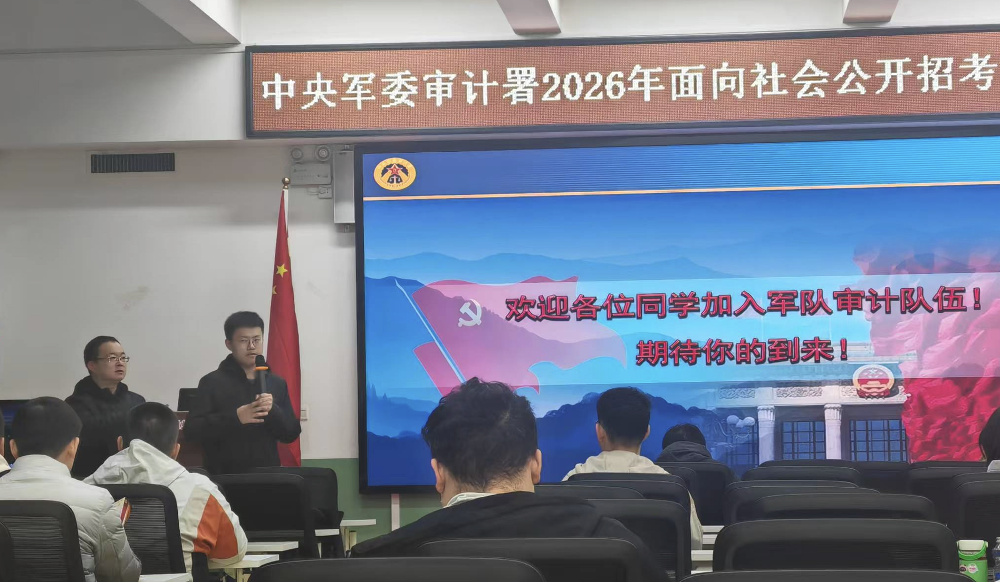
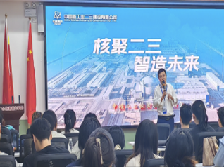
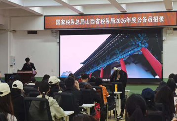
全流程让企业与学生高效对接 · 过去一年触达 3000+ 人次
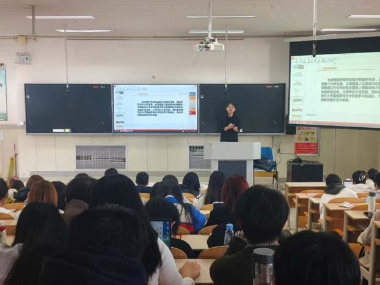
企业 HR、优秀毕业生担任讲师，围绕简历撰写、无领导小组讨论等核心技能分享，过去一年覆盖 2000+ 学生。
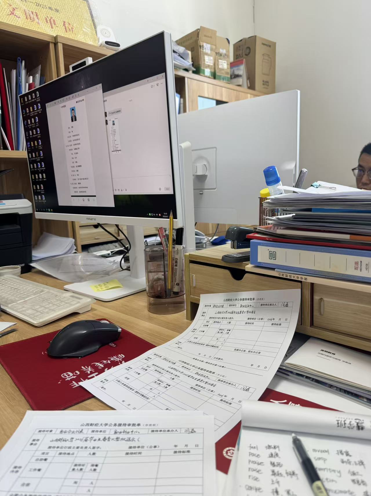
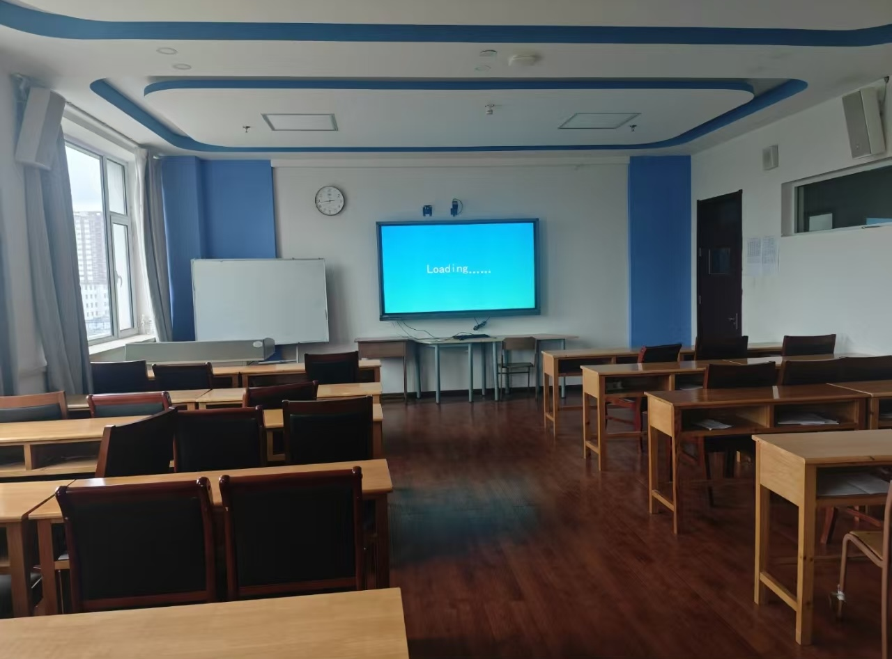
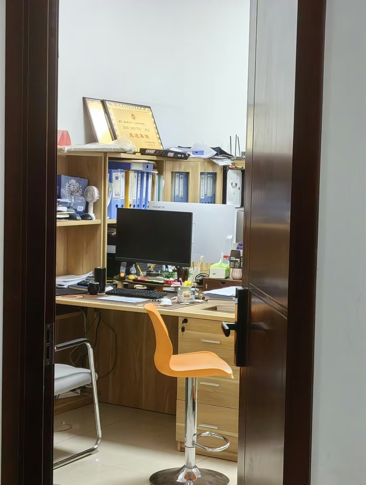
办公室值班、协助老师、处理文件、保障活动。
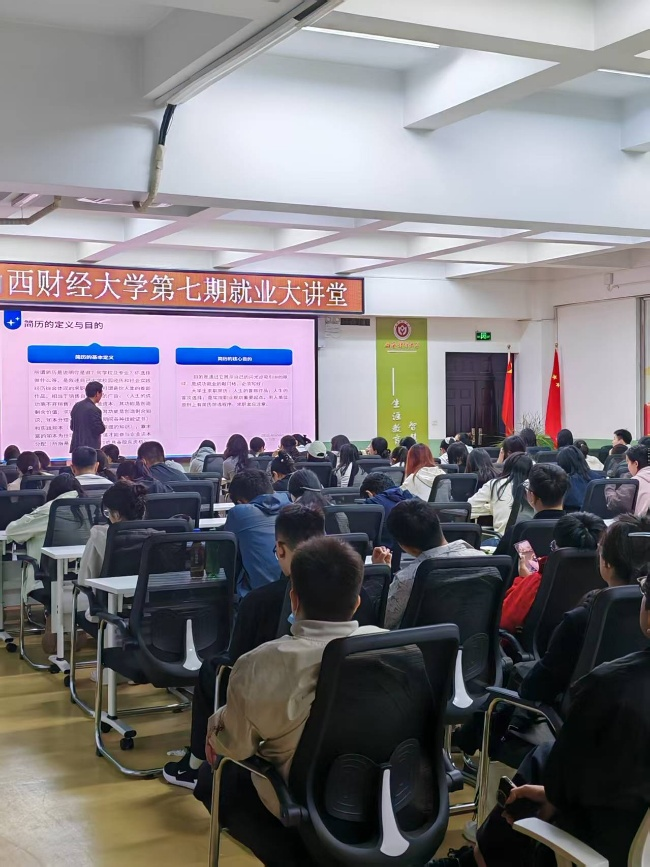
自习、交流、宣讲、比赛与大讲堂。过去一年累计使用 250+ 次。
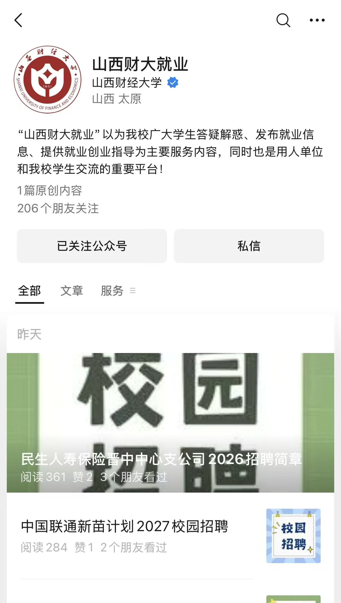
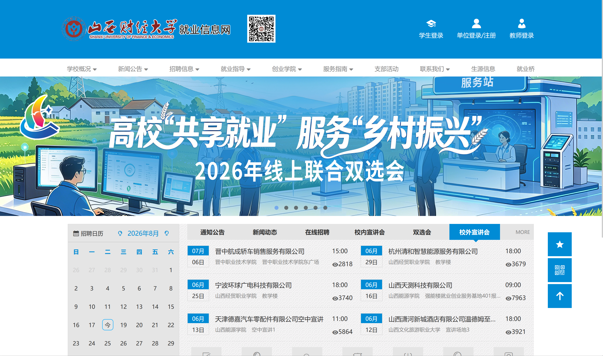
来自不同领域的名字，在这里不断相遇。
四个部门，四种参与方式。
让复杂的协作，始终有序。
办公室值班、文件整理与活动协作。
适合想练习沟通、统筹与细致执行的你。
让值得被看见的，抵达更多人。
内容整理、图文制作与信息传播。
适合对文字、摄影和视觉表达感兴趣的你。
让一次连接，成为一场合作。
围绕活动项目，参与沟通、对接与协作。
适合想练习策划与沟通的你。
让计划走出纸面，让事情发生。
参与活动筹备、现场执行与服务保障。
适合喜欢现场协作、动手实践的你。